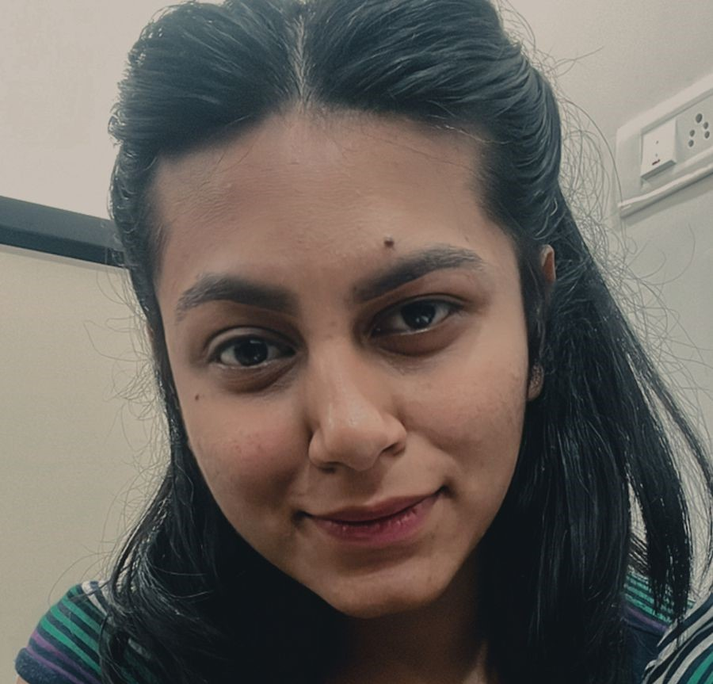

Software Engineer
An assiduous Software Engineer with 20 months of experience in web & mobile development applications. Strong skills include HTML5, CSS, Wordpress Design, JSON, JS, & Kotlin. Seeking to leverage expertise in front-end and back-end development.
Description:It is the website for the Employee Provident Fund Organization. In this application the employee can get the retirement benefits, promote savings, and ensure financial security. Responsibilities: Created the sitemap screen of Employee Provident Fund Organization using HTML code and CSS styling and I have also done the manual testing over the EPFO website.
Description:It is the application for the parking vehicles. It involves the QR tickets
which is generated by admin for the user as per the user’s vehicle number and type.
Responsibilities:
Created multiple UI screens and also applied the logic in Kotlin
language by using an Android Studio Tool as per the design was provided by the client
and also performing the manual testing of the same application.
Description:This app is similar to m-indicator where the user can book the metro ticket as per user’s preference of train stations and timings and also the user is able to track his train from his location. Responsibilities: Updating & Validating the time-table of Metro timings using JSON data & also do the manual testing of the mobile application, web application and also the POS QR scanning.
Description:This web app includes card verifications for parking vehicle ,entrance
and also for the Amusement Park. Where the user can recharge ,redeem ,renew and
deactivate the cards. Status of cards will be validated through the echo POS machine.
Responsibilities:
Working on the manual testing of the web application and admin
portal using TVM, cards and also the POS machine. Create the test cases of all the
testing results.
Description:This app is similar to movie show booking where the user can book the
show as per his seat preference like VIP, Classic & Platinum. After booking the ticket QR
will be generated which can be validated through the echo POS machine at the Gate.
Responsibilities:
Creating the UI screens on the mobile application using Kotlin on
Android Studio and do the manual testing of the mobile application, web application, the
POS QR scanning. Create the test cases of all the testing results.
THE CMMI 2.0 LEVEL 5 APPRAISAL 2023 Aurionpro Solutions Limited |
Certificate of Appreciation for the contribution of CMMI-Level 5.
CLICK2CLOUD CERTIFICATE
K.D.K. College of Engineering for participating the CODEFEST 2021!Next
Gen Open Source Cloud Platform 5G.
THE CMMI 2.0 LEVEL 5 APPRAISAL 2023 Aurionpro Solutions Limited |
An Award for Appreciation for the contribution of CMMI-Level 5.
Bachelor of Engineering,
Computer Technology | 2021
K.D.K. College of Engineering,
Nagpur.
Telangana State Board | 2016
Sri. Chaitanya Junior Kalasala,Hyderabaad
Maharashtra State Board | 2014
Jawahar Gurukul High School, Nagpur